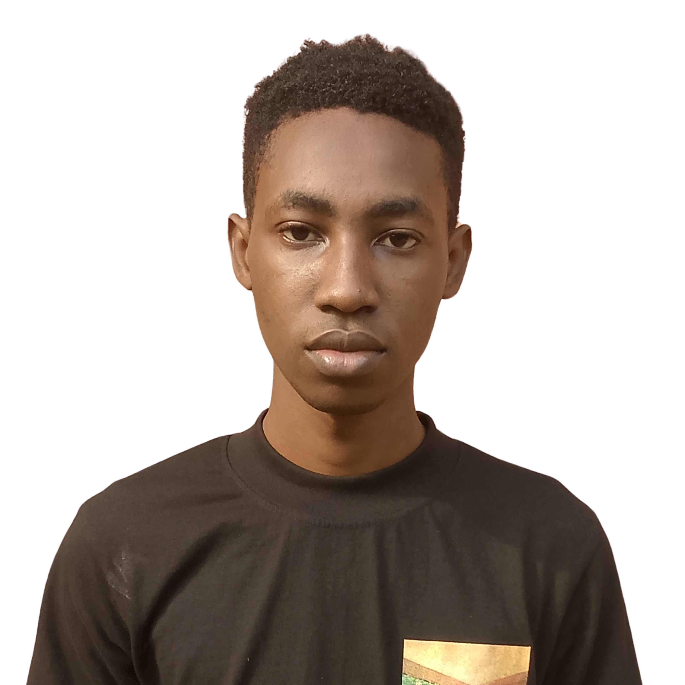

STUDENT • CREATOR • PROBLEM SOLVER
Hello, I'm Banjo Oluwaseyi.
A university student passionate about technology, learning, and building useful digital experiences.
Welcome to my academic portfolio. Explore my background, discover the projects I have worked on, and see how I organise my academic goals.

A LITTLE INTRODUCTION
Learning with purpose.
Who I am
I am a student committed to developing practical knowledge, strengthening my skills, and using technology to solve everyday problems.
Read my story →What inspires me
Technology, creative thinking, teamwork, and the opportunity to turn ideas into useful solutions keep me motivated.
Explore my interests →How I stay on track
I break academic goals into manageable tasks and use a planner to keep deadlines and priorities visible.
Open my planner →MY ACADEMIC SPACE
Small steps.
Meaningful progress.
A good academic journey is built through curiosity, planning, practice, and reflection. This website brings those parts together in one place.
Plan my weekSet clear goals
Know what you want to achieve and why it matters.
Track your progress
Turn assignments and study sessions into actionable tasks.
Keep improving
Reflect on what you learn and apply it to your next project.